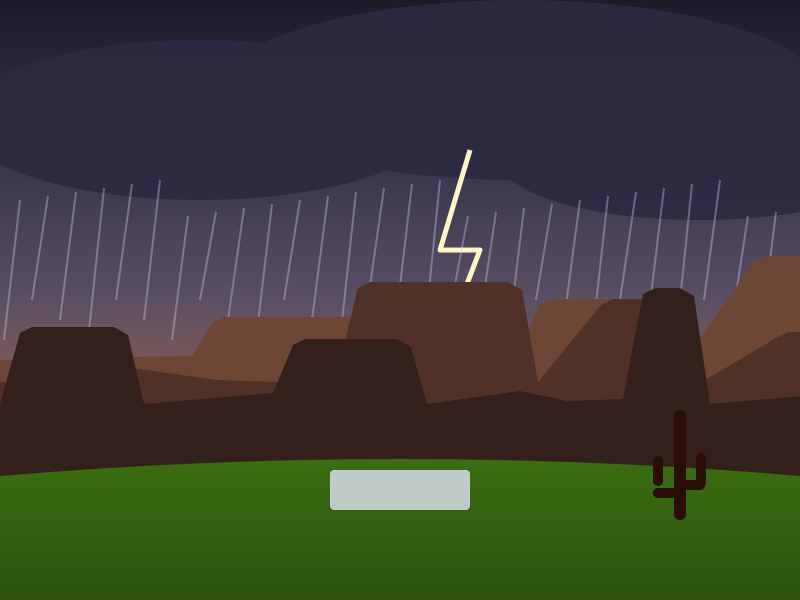

06 · Facility Features
Built to international standards
From ICC-sized boundaries and Australian-style clay pitches to shaded dugouts and a desert-modern clubhouse — here's what you'll find at Sunstone.

Grounds & outfields
Ten matching grounds
Every ground follows one template: an ICC-minimum 65-yard straight boundary, 70 yards square, and a lighter-mown 30-yard fielding circle. Outfields are Tifway 419 hybrid Bermuda — dense, heat-loving and quick to recover — overseeded with ryegrass each October to stay green through the winter season.
- Wheeled sight screens at both ends
- Boundary rope and flags
- Pop-up irrigation and sub-surface drainage
Pitches
True bounce, every format
Natural clay pitches are built Australian-style — 50–65% black cracking clay laid in thin rolled layers — for the hard, fast, even bounce quick bowlers love. Each ground also has an astro turf pitch with a UV-stabilised, heat-rated carpet over a two-layer stone base for reliable practice and junior cricket.

Practice
Covered practice nets
Six lanes back-to-back under a shade roof on a galvanised steel frame — train all day in the Arizona sun and keep going through light monsoon rain. LED lights extend sessions into the evening.
- Astro carpet on shock pad, painted creases
- UV-stabilised netting and padded backstop
- 25–30 yd open run-ups at both ends
- Bowling machine available

Teams & spectators
Dugouts with bleachers
Each ground has a home (blue) and away (red) dugout just outside the boundary rope — block-walled, roofed in translucent polycarbonate, with three tiers of aluminium bleachers.
- Misting line, ceiling fans and drinking fountain
- Bat racks, kit shelves and power outlets
- Ramp access and a level wheelchair space

Clubhouse
Desert-modern clubhouse
About 16,000 sq ft, split into a public front and a players' back. The glass-fronted dining room and shaded terrace look straight out over Grounds 6 and 7.
- Dining & kitchen with viewing terrace, shade canopy and misters
- Media room with press desk and broadcast feed
- Two conference rooms for meetings, coaching and sponsors
- Two team locker rooms with showers and a private exit to the grounds
- Men's and women's restrooms; two storage containers for club kit

Events
Presentation plaza
An open plaza with seating and a small raised stage with power — the home of trophy presentations, opening ceremonies, community days and food-truck evenings.
Hire the plaza
Desert-smart design
Built for heat and monsoon
Every field, roof, road and parking surface drains to a single storm basin by the clubhouse, emptied by drywells within 36 hours. Irrigation runs from 4–6 AM to cut evaporation, and the grass mix is chosen for Arizona's climate.
- Sub-surface laterals, collector mains and ring drains
- Waterproof pitch covers on standby July–September
- Shade canopies and misters wherever people gather
At a glance
More on site
250-car parking
Accessible stalls closest to the clubhouse, shade and LED lighting.
Cart paths
8 ft concrete paths between every ground — golf-cart and wheelchair friendly.
Locker rooms
Showers and lockers for both teams, with their own route to the grounds.
Media ready
Press desk and broadcast feed for streaming tournaments.
See it on the map
Explore every ground and facility on our interactive site plan.